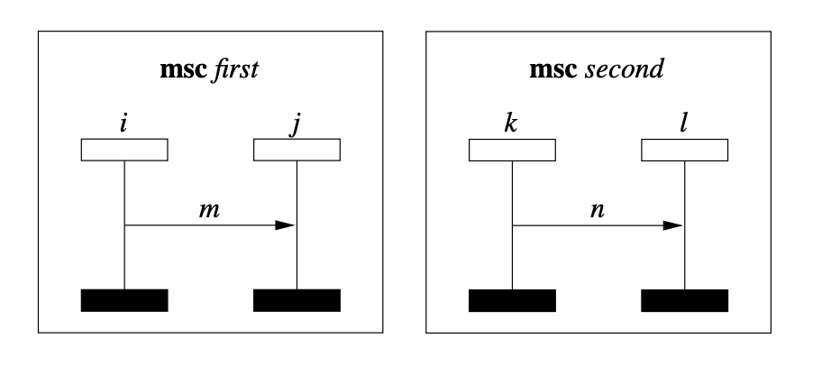
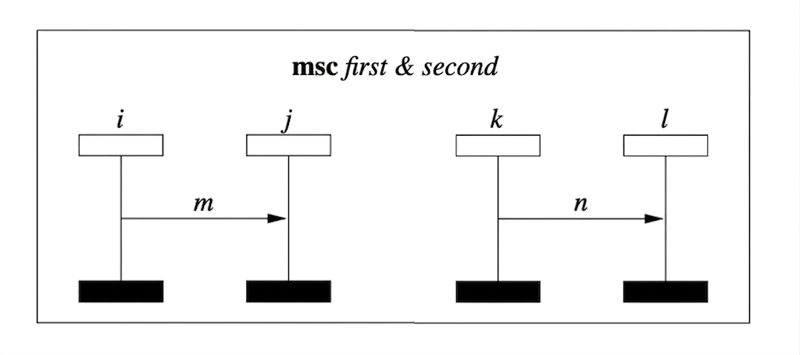
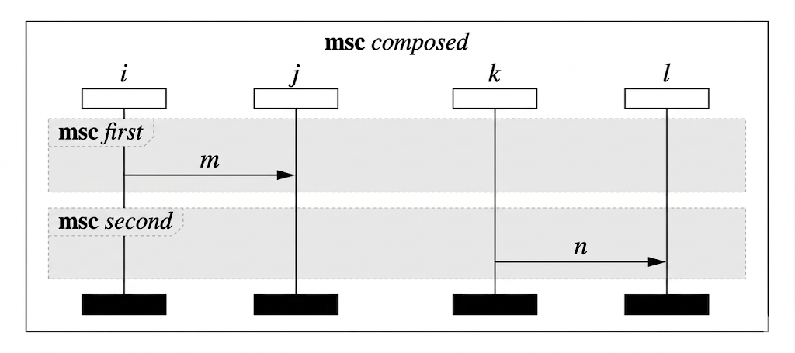

Experiments / Gemini 3 - Thinking / Example 4.docx
Question: Consider the following two message sequence charts labelled "first" and "second"; compose them horizontally and draw the resulting composed message sequence chart.

Answer:
To compose two Message Sequence Charts (MSCs) horizontally, you essentially combine the sets of instances and messages into a single frame. Since the instances in "first" ($i, j$) and "second" ($k, l$) are disjoint, the resulting chart simply places all four lifelines side-by-side.
Composition Logic
Instances: The new instance set is the union of both: $\{i, j, k, l\}$.
Messages: The message $m$ remains between $i$ and $j$, and message $n$ remains between $k$ and $l$.
Ordering: In a horizontal composition, the behaviors within each original chart are preserved and occur in parallel with the other.
Composed Message Sequence Chart
Note: The resulting chart represents the concurrent execution of both scenarios. Because there are no shared lifelines between the two original charts, no additional synchronization or sequential ordering is required between message $m$ and message $n$.
Please draw the resulting composed message sequence chart.
Horizontal composition of Message Sequence Charts is typically defined as a parallel composition. This is particularly straightforward when the sets of instances in the two charts are disjoint, as they are here (instances $\{i, j\}$ and $\{k, l\}$ are distinct).
In this case, horizontal composition creates a single chart containing all instances and all messages from both input charts, with the behavior from the two original scenarios occurring in parallel.
Here is the resulting composed message sequence chart:

Question: What is the order between sending m and receiving n in the composed diagram.
Answer:
In the composed Message Sequence Chart, there is no specific order between the sending of $m$ and the receiving of $n$. They are considered concurrent.
Here is why:
Horizontal Composition is Parallel: When you compose two MSCs horizontally, you are essentially saying that both scenarios can happen at the same time.
Disjoint Lifelines: The instances in the first chart ($i$ and $j$) are completely different from the instances in the second chart ($k$ and $l$). Because there is no shared lifeline, there is no "common thread" to enforce a sequence between them.
Partial Ordering: MSCs define a partial order of events. In your diagram, we know $i$ must send $m$ before $j$ receives it, and $k$ must send $n$ before $l$ receives it. However, because there is no causal link (like a message or a shared process) connecting the $i/j$ pair to the $k/l$ pair, the events in one can happen before, after, or simultaneously with the events in the other.
In short, if you were to trace the execution of this system, you might see $m$ sent first, or you might see $n$ received first—the diagram allows for both.
Question:
Please consider the original two MSCs labelled "first" and "second", given here again. Please compose them vertically (by putting "first" on top and "second" at the bottom). Please draw the resulting composed diagram
Answer:
Composing Image Elements
I'm now analyzing an existing image with two message sequence charts. The initial phase focused on identifying and isolating the individual MSC components within their rectangular frames, preparing to merge them vertically. The goal is to create a new, combined MSC image. I've now identified the distinct charts and their frames.
Defining Composition Strategy
I'm now focusing on defining the vertical composition strategy for combining the MSCs. I've confirmed two distinct MSCs, each in its rectangular frame, with different instance labels. The crucial element is determining if these are the same or different instances, as this influences how the lifelines are handled in the combined chart. A key aspect is whether or not the lifelines continue or start new.
Interpreting Vertical Composition
I am now focusing on determining how to interpret "vertical composition." After analyzing the source image, I am working with two MSCs, each in its rectangular frame with distinct instance labels. I am considering the common interpretation of vertical composition and I believe the sequential composition is what is meant by the given task. I must now ensure the first MSC's events precede those of the second.
Formulating Diagram Layout
I am now focusing on creating a new single MSC frame, the most standard interpretation for MSC diagrams: Sequential composition. This interpretation involves four lifelines: $i$, $j$, $k$, and $l$. The events of the first MSC must precede the events of the second. The lifelines will be arranged from left to right in the order $i, j, k, l$, and I will label the combined MSC "msc composed".
Constructing New Combined Chart
I'm now generating a single, composed MSC with a new frame. The layout includes four lifelines: $i, j, k, l$ arranged from left to right. I'm focusing on incorporating the "first" and "second" MSC events into the combined chart in a sequential manner, as the previous stage. The combined MSC should be titled "msc composed". I'm creating the event flow within a single frame. The final visual representation will highlight the message '$m$' at the top and the message '$n$' drawn significantly lower on the timeline.
Refining Composition Visualization
I'm now refining the single-frame sequential design for the combined MSC. I'll create a large rectangular frame titled "msc composed". The layout will include lifelines $i$, $j$, $k$, and $l$ arranged left-to-right. I'll place message '$m$' near the top from '$i$' to '$j$'. A visual break will be added before drawing message '$n$' from '$k$' to '$l$' significantly lower to clarify sequence.
Interpreting Vertical Sequence
I'm now determining how to render the vertical composition when the lifeline sets differ. Analyzing the standard sequential composition, I'm now leaning toward the interpretation where instances can be continued, assuming $i=k$ and $j=l$ for vertical composition to be meaningful. I've re-evaluated a single-frame design and revised the composition with shared instances in mind. The new frame will have two lifelines.
Refining Composition Interpretation
I'm now determining the most appropriate approach for rendering the vertical composition when the lifeline sets are distinct. I am focusing on what "vertical composition" means in a sequential setting, and have made some revisions. The focus now is ensuring the distinct instance labels are maintained to properly represent sequential execution. I will ensure all lifelines are present. The revised composition will make use of explicit "first" and "second" regions.
Revising Sequential Composition
I'm now iterating on the approach for rendering vertical composition. I'm focusing on preserving the distinct instance labels within a sequential execution, and maintaining clarity on the origins of messages '$m$' and '$n$'. I've shifted away from potentially shared lifelines and am now planning to create explicit regions for "first" and "second" MSCs within a single frame.
Refining Composition Visualization
I'm now iterating on the approach. My thought is to use a large frame with four lifelines: $i$, $j$, $k$, and $l$ in order from left to right. I'm focusing on incorporating inline MSC regions within a larger frame, titling them "first" and "second". Message $m$ will originate in "$i$" and terminate in "$j$" within the first region. Message $n$ will originate in "$k$" and terminate in "$l$" within the second region.
Refining Composition Visualization
I'm now implementing the final diagram using a large frame titled "msc composed". I'm using inline regions labeled "msc first" and "msc second" to clarify the sequential execution, which preserves the distinct instance labels $i, j, k, l$. Message '$m$' now appears in the first region and message '$n$' in the second, with four lifelines.
Analyzing Composition Strategy
I've determined that a single-frame diagram is the most suitable approach. I'm prioritizing the inclusion of regions for clarity, specifically "msc first" and "msc second". The sequence of events will maintain distinct instance labels. I'm now making final adjustments to the visual style of the frames.
Refining Composition Visualization
I'm now generating the diagram. My current focus is implementing the inline MSC regions for clear sequential execution of the two given charts, labeled "first" and "second". I am working to ensure all lifelines, labeled $i$, $j$, $k$, and $l$, are present and clearly associated with their respective messages '$m$' and '$n$'. The final frame will be "msc composed".
Refining Composition Visualization
I'm now generating the diagram. The focus is to clearly represent sequential execution with inline regions labeled "first" and "second". All four lifelines, labeled $i$, $j$, $k$, and $l$, are present. Message '$m$' is in the first region and message '$n$' in the second. The final frame will be "msc composed".
Refining Composition Visualization
I'm now integrating all these thoughts. The plan is a single frame labeled "msc composed" with an explicit sequence: an "msc first" region, then an "msc second" region. The lifelines $i, j, k,$ and $l$ will be present. I'm focusing on ensuring clear depiction of the message flow and preserving the structure of the individual charts within the combined frame.
Refining Composition Visualization
I'm now integrating previous decisions. I'll create a single frame, titled "msc composed," with explicit "msc first" and "msc second" inline regions. The goal is sequential execution with clear labels: $i, j, k, l$. Message '$m$' starts in the first region, and message '$n$' starts in the second, with all lifelines present.
Refining Composition Plan
I'm now fully committed to the inline MSC region approach within a single frame to represent the composition. It is the best choice to show sequential execution while maintaining distinct instance labels. I've re-examined the need to use shared lifelines. The design is a single frame labeled "msc composed" with two labeled inline regions, first and second, which I feel best shows the sequential nature of the design.
Refining Composition Plan
I'm now fully committed to the inline MSC region approach within a single frame to represent the composition. It is the best choice to show sequential execution while maintaining distinct instance labels. I've re-examined the need to use shared lifelines. The design is a single frame labeled "msc composed" with two labeled inline regions, first and second, which I feel best shows the sequential nature of the design.
Refining Composition Plan
I'm now integrating previous decisions. The output will be a single, composed MSC frame. I'm focusing on two inline regions to represent the sequential events. These regions will be clearly labeled "first" and "second". The four distinct lifelines, $i, j, k, l$, will be present and I am now creating the final combined diagram.
Defining Diagram Layout
I've determined a single-frame diagram best suits this task, with two clearly labeled regions: "*first*" and "*second*". Sequence is crucial and the labels must be preserved to retain distinction. The final visual will emphasize sequential flow.
Verifying Frame Composition
I'm focused on the frame labeled "msc composed." I'm checking the vertical elements, ensuring the lifelines (i, j, k, l) converge on a unified timeline. I'm also examining the stacking of the message regions, making sure the first message 'm' appears as intended in the first position.
Checking Message Stacking
I'm now focusing on the message region stacking within the overall "msc composed" frame. I've confirmed the initial message 'm' occupies the correct position, followed by message 'n' below it. The use of dashed boxes helps distinguish the messages. I'm satisfied with the details and quality of the labels.

Question:
What is the order between sending m and receiving n in the vertically composed diagram.
Answer:
In the vertically composed Message Sequence Chart, there is still no specific order between the sending of $m$ and the receiving of $n$. They remain concurrent.
While "vertical" usually implies a sequence (top then bottom), Message Sequence Charts follow the rule of Weak Sequential Composition. Here is the breakdown of why they aren't ordered:
1. The Rule of Weak Sequencing
In MSC semantics, vertical composition only enforces an order between events that happen on the same lifeline.
If instance $i$ was in both charts, all of $i$'s actions in the top chart would have to finish before its actions in the bottom chart began.
However, because the lifelines are disjoint ( $\{i, j\}$ in the first and $\{k, l\}$ in the second), there is no "shared clock" or synchronization point connecting them.
2. Lack of Causal Links
For sending $m$ to happen before receiving $n$, there would need to be a path of arrows or a shared lifeline connecting them.
$i$ sends $m$ to $j$.
$k$ sends $n$ to $l$.
There is no message sent from $i$ or $j$ to $k$ or $l$ that would force $k$ to wait for the first chart to finish.
3. Vertical vs. Horizontal (In this Case)
Because these two charts share no instances, the vertical composition and the horizontal composition actually result in the exact same partial order of events. In both scenarios, the two interactions are independent and can happen in any relative order.
Summary: Even though "first" is drawn above "second," the system treats them as two independent processes running in parallel. Without a shared lifeline to act as a bridge, the sender of $n$ has no way of "knowing" if $m$ has been sent yet.
Does this help clarify how MSCs handle independent lifelines, or were you expecting a "global" synchronization where everything in the top box must finish first?